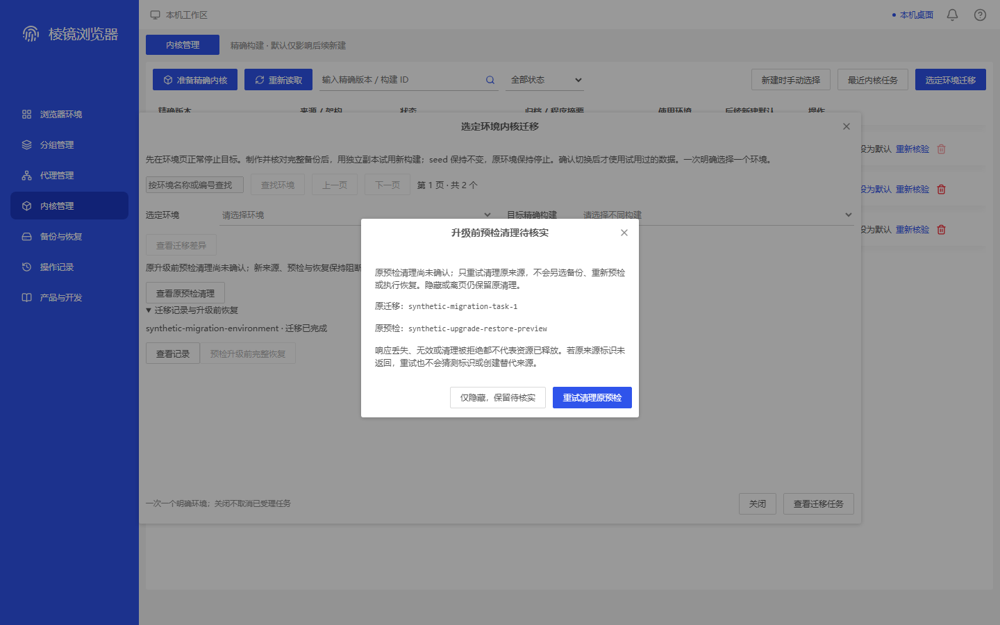
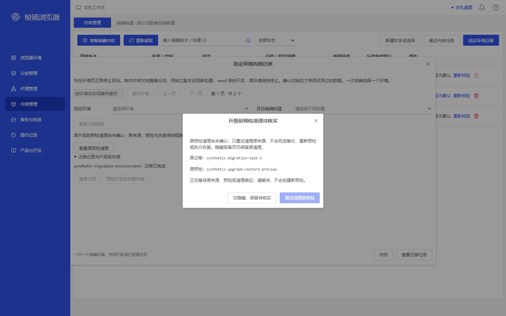
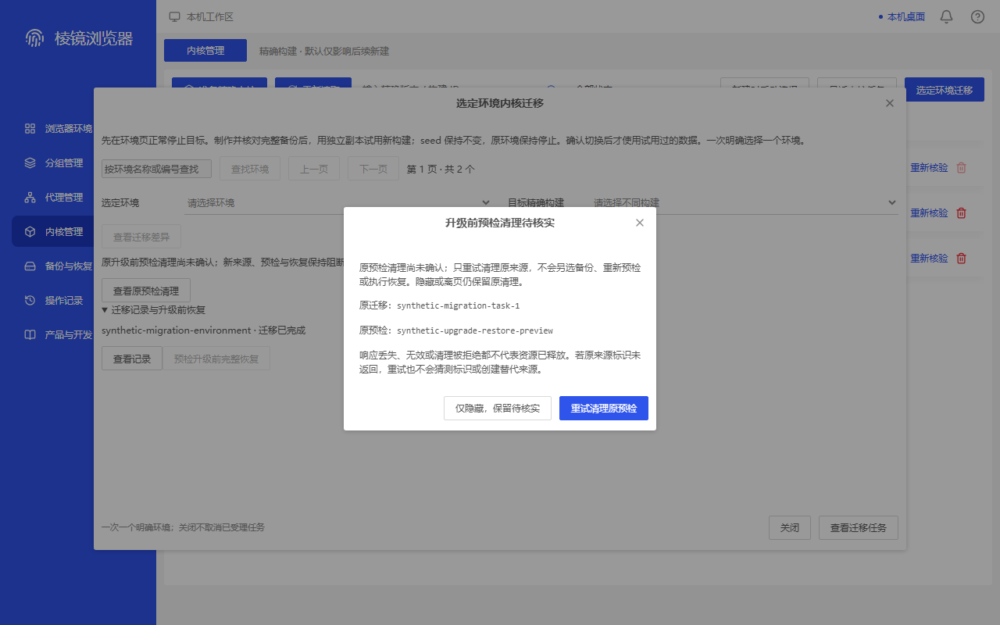
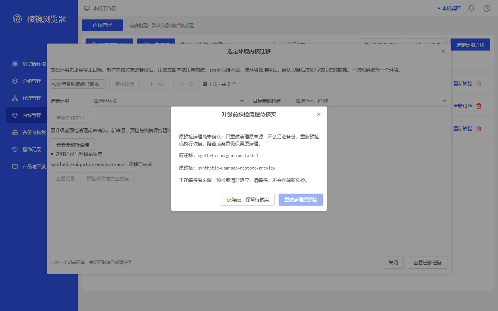

migration-discard-frontier-native-unknown-cleanup · 1440×900
MAPPED — 原清理尚未确认的说明、原迁移与原预检两行、隐藏保留和重试按钮均可读；仅映射删除确认容器，不构成同业务直接证据。
映射容器 environment-delete-confirm；不代表同业务原参考已找到。


c0a4802b5e83e56fa7c0649c5b949af4162ea6d34275a62fd86375805c498a68
所列合成状态的有限补证；ADAPTED/MAPPED不是严格同业务1:1通过，MISSING/FAIL保留。旧来源、失败、274/47和正式4/21不回写；不代表真实桌面验收。
实际取证源码 398314c7d4f300576850df78d2a0631c9fdc3b38；渲染 c6e6a49fee35afe42d1a3bf27e72e2fe200eddacf88c164e94eb04cae6bc65fc。4图；ADAPTED 0 / MAPPED 4 / MISSING 0 / FAIL 0。
MAPPED — 原清理尚未确认的说明、原迁移与原预检两行、隐藏保留和重试按钮均可读；仅映射删除确认容器，不构成同业务直接证据。
映射容器 environment-delete-confirm；不代表同业务原参考已找到。

c0a4802b5e83e56fa7c0649c5b949af4162ea6d34275a62fd86375805c498a68
MAPPED — 等待原来源、预检或清理响应的反馈及不新建预检的说明可读；页脚呈等待态，未被裁切。批次结果仅作容器映射，直接参考仍缺失。
映射容器 batch-progress-fixture；不代表同业务原参考已找到。

50575421053bd2d808a66c1522dd612eabe5c70bf7b0978503f7807eb9057674
MAPPED — 较小视口下，清理未确认说明、原身份两行和自然页脚均完整可读；未见横向溢出或按钮裁切。删除确认仅为容器参考，仍为 MISSING_DIRECT。
映射容器 environment-delete-confirm；不代表同业务原参考已找到。

b6f0ed0d4cdac0d9c7f33e2fa02a7a2488102d8146f021be3f2e514f4eae4d8e
MAPPED — 较小视口下，等待反馈与不新建预检的说明清晰，等待态页脚仍在卡片内；未见横向溢出。只映射批次结果容器，不作为同业务直接证据。
映射容器 batch-progress-fixture；不代表同业务原参考已找到。

6793f913ec9fb2b6697affecf29587d8d1acb88599866843fe6dc54585cd2b06